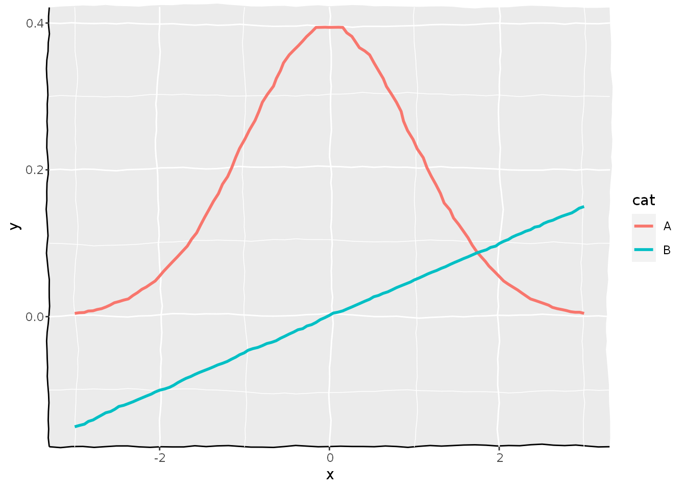

/ˌɛlɪˈmɛntlɪst/
An element of whimsy
elementalist extends the theme element options of ggplot2. It provides variations on rectangular and line elements that go into ggplot2’s theme() function, which tweaks the appearance of your plots. The package also has some geoms that are instructed to draw their lines and rectangles according to the theme. This is mostly a pet project that still needs some time to grow.
Installation
You can install the development version from GitHub with:
devtools::install_github("teunbrand/elementalist")
Examples
At the moment, the package has three ‘styles’ to choose from for lines. They are ‘wiggle’, ‘multicolour’ and ‘glow’.
Wiggle
Here is an example how you can make your elements wiggle!
library(elementalist) #> Loading required package: ggplot2 x <- seq(-3, 3, length.out = 20) df <- data.frame( x = c(x, x), y = c(dnorm(x, sd = 1), c(x)/20), cat = rep(LETTERS[1:2], each = 20) ) ggplot(df, aes(x, y, colour = cat)) + geom_line_theme(size = 1) + coord_cartesian(clip = "off") + theme( elementalist.geom_line = element_line_wiggle(6, n = 6), panel.background = element_rect_wiggle(sides = c("lb"), colour = "black"), panel.grid.major = element_line_wiggle(3), panel.grid.minor = element_line_wiggle(3) )

Multicolour
Here is how you can make them colour gradients. It defaults to rainbow colours, but you can set your own.
ggplot(economics, aes(date, unemploy)) + geom_line_theme() + theme( elementalist.geom_line = element_line_multicolour(), axis.line = element_line_multicolour(), panel.grid.minor = element_line_multicolour(c("white", "transparent", "white")) )
Glow
Glowing lines work well with a dark background. Elementalist has a theme that makes it easy to make a plot quite dark.
df <- data.frame( x = rep(c(2, 5, 7, 9, 12), 2), y = rep(c(1, 2), each = 5), z = factor(rep(1:5, each = 2)), w = rep(diff(c(0, 4, 6, 8, 10, 14)), 2) ) ggplot(df, aes(xmin = x - w / 2, xmax = x + w / 2, ymin = y, ymax = y + 1)) + geom_rect_theme(aes(colour = z), fill = NA) + scale_colour_manual( values = c("#00E6FF","#CF77F0", "#8F9FFF", "#2ABEFF", "#FD006A") ) + theme_black() + theme( panel.grid = element_line_glow(colour = "grey10"), axis.line = element_line_glow(colour = alpha("#FD006A", 0.5)), axis.ticks = element_line_glow(colour = alpha("#FD006A", 0.5)), elementalist.geom_rect = element_rect_glow() )
Footnotes
This package is still in the experimental phase. Expect some bugs here and there and use at your own risk!
The logo is based on the ‘squared circle’ alchemical symbol representing the four elements of matter and the philosopher’s stone. With an extra hexagon of course, because this is an R package, after all.

{kind=link}